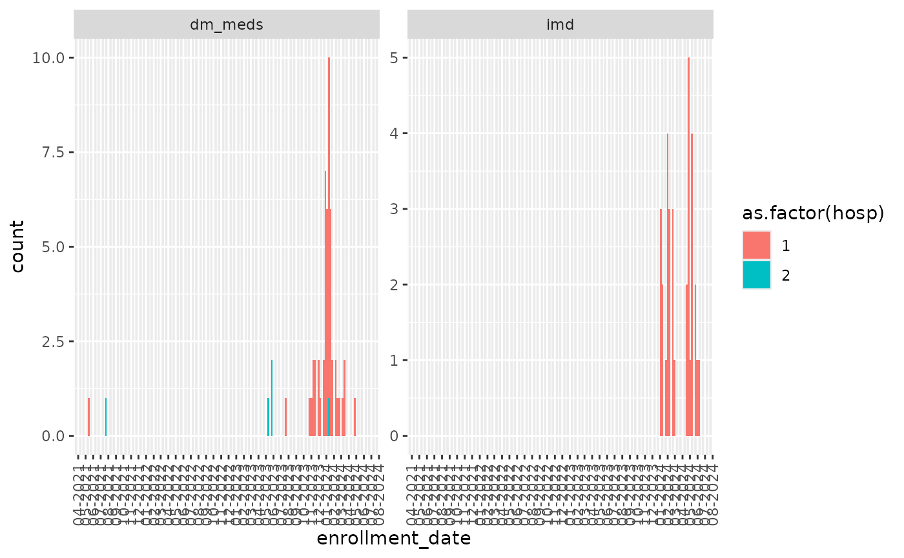

Quality assurance
quality-assurance.Rmd
if (!rlang::is_installed("avoncap")) devtools::load_all()
# The data input directory on my development machine:
options("avoncap.input" = "~/Data/avoncap/")
# library(avoncap)
devtools::load_all()
#> ℹ Loading avoncaploading and normalising the central database
rawData2 = avoncap::load_data("avoncap-export","central", merge=TRUE)
#> using cached item: ~/.cache/avoncap/data-17eb1883a6ef139c6aff94d868955a14-8717cafc64581830f09b2f6b8611d48d.rda
# without merge: currently: INCONSISTENT COLUMN(S) IN FILES: sars_cov2_antigen
# due to the fact it is mostly a numeric but some values ">250"
# devtools::load_all()
rawData3 = rawData2 %>% avoncap::validate_data()
#> validate data using: validate.avoncap_export.central
#> non-finite value in consented in 10 rows
#> non-finite value in ppc in 10 rows
#> non-finite value in include_patient in 10 rows
#> non-finite value in hosp in 10 rows
#> non-finite value in withdrawal in 21 rows
#> missing value in hr in 4 rows
#> missing value in systolic_bp in 5 rows
#> missing value in diastolic_bp in 6 rows
#> missing value in rr in 5 rows
#> missing value in pulse_ox in 6 rows
#> missing value in fio2 in 4 rows
#> missing value in imd in 17 rows
#> missing columns: ethnicity in 1 rows
#> non-finite value in news_2_total in 34 rows
#> non-finite value in care_home in 1 rows
#> non-finite value in liver_disease in 1 rows
#> non-finite value in gastric_ulcers in 1 rows
#> non-finite value in transplant in 1 rows
#> non-finite value in hospital_length_of_stay in 7 rows
#> non-finite value in covid_19_diagnosis in 1 rows
#> non-finite value in lrtd_30d_outcome in 1 rows
#> non-finite value in highest_level_care_require in 6 rows
#> non-finite value in ventilatory_support in 7 rows
#> non-finite value in psi_class in 1 rows
#> non-finite value in gp_practice_drop_down in 279 rows
#> missing value in resp_disease in 1 rows
#> missing value in chd in 2 rows
#> missing value in dementia in 1 rows
#> missing value in neurological_disease in 1 rows
#> missing value in hiv in 1 rows
#> missing value in haem_malig in 1 rows
#> missing value in final_soc_lrtd_diagnosis in 1 rows
#> both pneumonia and NP-LRTI in final SOC dx in 1 rows
#> marked as survived in lrtd_30d_outcome but survival_days <= 30 days in 1 rows
#> 30 day and 1 yr survival duration different in 10 rows
#> length of stay > 30 day survival duration in 91 rows
#> length of stay > 1 yr survival duration in 104 rows
#> marked as died lrtd_30d_outcome but survival_days > 30 days in 3 rows
#> non-finite value in dm_meds in 19 rows
#> non-finite value in current in 1 rows
#> non-finite value in pregnancy in 3 rows
#> using cached item: ~/.cache/avoncap/data-17eb1883a6ef139c6aff94d868955a14-7498859e4eaf9f364dc024b6ee4039c2.rda
normData2 = rawData3 %>% avoncap::normalise_data()
#> Normalising data using: normalise.avoncap_export.central
#> using cached item: ~/.cache/avoncap/data-17eb1883a6ef139c6aff94d868955a14-767899bd2d292ad780aeb94b72046017.rda
#> Admission date is derived from study week and hence approximate.
#> Some columns expected in the mappings were not present: nhs_number, np_swab_3, adm_np_type_3, covidvax_date, covidvax_dose_2, covidvax_dose_3, covidvax_dose_4, covidvax_dose_5, covidvax_dose_6, flu_date, ppv23_date, previousinfection_date
#> using cached item: ~/.cache/avoncap/norm-0ef4812a2d1bc751062531c384a2b89e-baaf77bb13fd06856599902ee308125d.rda
failures = rawData3 %>% avoncap::write_issues("~/avoncap-issues")
tmp = failures %>%
filter(.error_type %in% c("none checked in checkbox","missing value")) %>%
inner_join(rawData2, by="record_number", suffix=c("",".raw")) %>%
group_by(.variable) %>%
filter(
!is.na(enrollment_date) &
!is.na(hosp)
) %>%
filter(
n()>20
)
if (nrow(tmp) > 0) {
ggplot(tmp, aes(x=enrollment_date, fill=as.factor(hosp)))+
geom_histogram(binwidth = 7)+
scale_x_date(date_breaks = "1 month", date_labels = "%m-%Y")+
theme(axis.text.x.bottom = element_text(angle = 90, vjust=0.5, hjust=1))+
facet_wrap(~.variable,scales = "free_y")
} else {
message("No systematically missing values in checked items")
}
# normData2 = rawData2 %>%
# avoncap::normalise_data(.nocache = TRUE)
augData2 = normData2 %>% avoncap::augment_data(.nocache = TRUE)
#> Augmenting data using: augment.avoncap_export.central
#> caching item: ~/.cache/avoncap/augment-4c0c0c577381837fb7b8ee36b440288a-38fc926240b6910be5a09401887ed0b1.rda
#> Created outcome.admitted_to_hospital using:
#> Created demog.age_category, demog.age_eligible, admission.cci_category, admission.cci_category_alternate, admission.rockwood_category, admission.curb_65_category using: demog.age, admission.charlson_comorbidity_index, admission.rockwood_score, admission.curb_65_severity_score
#> Created admin.patient_identifier using: admin.first_record_number, admin.record_number
#> Created admission.episode, admission.interval using: admission.date
#> Skipping function due to error: In argument: `admin.linked_gp_practice = ~...`.
#> Created admin.catchment_status using: admin.gp_practice
#> Created comorbid.diabetes_type, comorbid.solid_cancer_present, comorbid.haemotological_cancer_present, comorbid.any_cancer_present, comorbid.any_chronic_lung_disease, comorbid.any_chronic_heart_disease, comorbid.cva_or_tia, comorbid.any_immune_compromise using: comorbid.diabetes, comorbid.solid_cancer, comorbid.leukaemia, comorbid.lymphoma, comorbid.no_haemotological_cancer, comorbid.asthma, comorbid.bronchiectasis, comorbid.chronic_pleural_dx, comorbid.copd, comorbid.interstitial_lung_dx, comorbid.cystic_fibrosis, comorbid.other_chronic_resp_dx, comorbid.pulmonary_hypertension, comorbid.ccf, comorbid.ihd, comorbid.previous_mi, comorbid.congenital_heart_dx, comorbid.hypertension, comorbid.af, comorbid.other_arrythmia, comorbid.other_heart_dx, comorbid.other_other_heart_dx, comorbid.cva, comorbid.tia, comorbid.immunodeficiency, admission.on_immunosuppression
#> Created admission.initial_presentation_3_class using: admission.presumed_CAP_clinically_confirmed, admission.presumed_CAP_radiologically_confirmed, admission.presumed_CAP_no_radiology, admission.presumed_Empyema_or_abscess, admission.presumed_LRTI, admission.presumed_exacerbation_COPD, admission.presumed_exacerbation_non_COPD, admission.presumed_congestive_heart_failure
#> Created admission.hospital_acquired, admission.days_before_enrollment using: admission.hospital_acquired_covid, admission.non_lrtd_hospital_acquired_covid, admission.date, admin.enrollment_date
#> Created admission.covid_pcr_result, admission.is_covid using: diagnosis.covid_19_diagnosis, diagnosis.admission_swab, diagnosis.test_type
#> Created diagnosis.pneumonia, diagnosis.LRTI, diagnosis.exacerbation_of_chronic_respiratory_disease, diagnosis.heart_failure using: diagnosis.SOC_CAP_clinically_confirmed, diagnosis.SOC_CAP_radiologically_confirmed, diagnosis.SOC_CAP_no_radiology, diagnosis.SOC_Empyema_or_abscess, admission.cxr_pneumonia, diagnosis.SOC_LRTI, diagnosis.SOC_exacerbation_COPD, diagnosis.SOC_exacerbation_non_COPD, diagnosis.SOC_congestive_heart_failure
#> Created admission.infective_cause using: diagnosis.SOC_non_infectious_process, diagnosis.SOC_non_LRTI
#> Created admission.category, admission.presentation_3_class using:
#> Created diagnosis.infection_context using: admission.hospital_acquired_covid, admission.non_lrtd_hospital_acquired_covid, diagnosis.first_COVID_positive_swab_date, admission.date
#> Created genomic.variant_inferred using: genomic.variant, admission.date
#> Created symptom_onset.date_of_symptoms, symptom_onset.time_of_symptoms_since_first_vaccine_dose, symptom_onset.time_of_symptoms_since_second_vaccine_dose, symptom_onset.time_of_symptoms_since_third_vaccine_dose, symptom_onset.time_of_symptoms_since_fourth_vaccine_dose, vaccination.dose_interval, vaccination.booster_interval, vaccination.second_booster_interval using: admission.date, admission.duration_symptoms, admission.time_since_first_vaccine_dose, admission.time_since_second_vaccine_dose, admission.time_since_third_vaccine_dose, admission.time_since_fourth_vaccine_dose
#> Created vaccination.protection using: vaccination.covid_vaccination, admission.time_since_fourth_vaccine_dose, admission.duration_symptoms, admission.time_since_third_vaccine_dose, admission.time_since_second_vaccine_dose, admission.time_since_first_vaccine_dose, admission.previous_covid_infection
#> Created vaccination.vaccination using: vaccination.covid_vaccination, admission.time_since_sixth_vaccine_dose, admission.duration_symptoms, admission.time_since_fifth_vaccine_dose, admission.time_since_fourth_vaccine_dose, admission.time_since_third_vaccine_dose, admission.time_since_second_vaccine_dose, admission.time_since_first_vaccine_dose
#> Created vaccination.brand_combination using: vaccination.first_dose_brand, vaccination.second_dose_brand, vaccination.third_dose_brand
#> Created pneumo.presentation_CAP, pneumo.presentation_RAD, pneumo.presentation_class using: diagnosis.SOC_CAP_radiologically_confirmed
#> Created admission.pneumococcal_high_risk using: demog.age, comorbid.other_pneumococcal_risks, comorbid.copd, comorbid.interstitial_lung_dx, comorbid.cystic_fibrosis, comorbid.hypertension, comorbid.ccf, comorbid.ihd, comorbid.ckd, comorbid.liver_disease, comorbid.diabetes, comorbid.immunodeficiency, comorbid.asthma, admission.on_immunosuppression
#> Created admission.pneumococcal_risk_classification using: comorbid.cva, comorbid.immunodeficiency, comorbid.leukaemia, comorbid.lymphoma, comorbid.no_haemotological_cancer, admission.on_immunosuppression, comorbid.transplant_recipient, comorbid.ckd, comorbid.HIV, comorbid.solid_cancer, demog.care_home_resident, demog.smoker, demog.age, demog.alcohol_abuse, comorbid.diabetes, comorbid.diabetes_medications, comorbid.paraplegia, comorbid.copd, comorbid.interstitial_lung_dx, comorbid.cystic_fibrosis, comorbid.asthma, comorbid.liver_disease, comorbid.ccf, comorbid.ihd, comorbid.other_pneumococcal_risks
#> Created day_7.WHO_clinical_progression, outcome.WHO_clinical_progression using: day_7.death, day_7.max_ventilation_level, day_7.ionotropes_needed, day_7.max_o2_level, outcome.survival_duration, outcome.functional_status, outcome.highest_level_ventilatory_support, outcome.received_ionotropes, outcome.respiratory_support_needed
#> Created outcome.icu_admission, outcome.death_within_30_days, outcome.death_within_1_year, outcome.death_during_follow_up using: outcome.icu_duration, day_7.death, outcome.survival_duration, outcome.one_year_survival_duration, outcome.one_year_survival_complete, outcome.inpatient_death, outcome.functional_status
#> Created survival.length_of_stay, survival.uncensored_time_to_death, survival.last_observed_event using: admin.enrollment_date, outcome.length_of_stay, outcome.survival_duration, outcome.one_year_survival_duration, admission.date
#> Created survival.length_of_stay_category, survival.30_day_death_time, survival.30_day_death_event, survival.1_yr_death_time, survival.1_yr_death_event, survival.30_day_discharge_time, survival.30_day_discharge_event using:
#> Created survival.length_of_stay_quintile using:
#> Created day_7.max_o2_gt_28, day_7.max_o2_gt_35, day_7.max_o2_gt_50, day_7.WHO_score_gt_6, day_7.WHO_score_gt_5, day_7.los_gt_3, day_7.los_gt_5, day_7.los_gt_7 using: day_7.max_o2_level, day_7.length_of_stay, outcome.survival_duration
#> Created using:
avoncap::find_new_field_names(normData2, "adm_diagnosis")
#> adm_diagnosis___1
#> "admission.presumed_CAP_radiologically_confirmed"
#> adm_diagnosis___2
#> "admission.presumed_CAP_clinically_confirmed"
#> adm_diagnosis___3
#> "admission.presumed_CAP_no_radiology"
#> adm_diagnosis___4
#> "admission.presumed_LRTI"
#> adm_diagnosis___5
#> "admission.presumed_Empyema_or_abscess"
#> adm_diagnosis___6
#> "admission.presumed_exacerbation_COPD"
#> adm_diagnosis___7
#> "admission.presumed_exacerbation_non_COPD"
#> adm_diagnosis___8
#> "admission.presumed_congestive_heart_failure"
#> adm_diagnosis___9
#> "admission.presumed_non_infectious_process"
#> adm_diagnosis___10
#> "admission.presumed_non_LRTI"